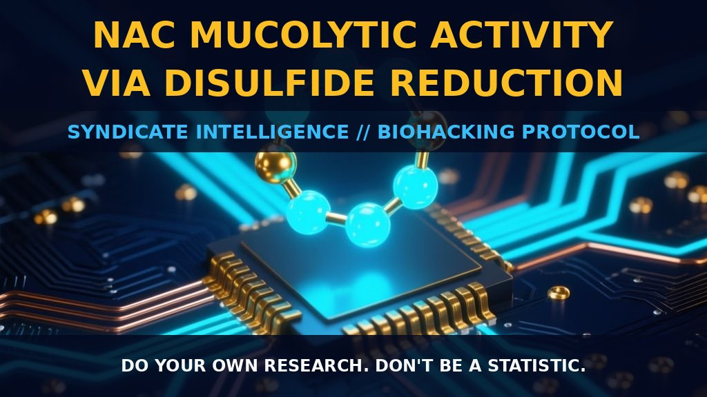

NAC as a Disulfide Reductant: Mechanics, Signaling, and

1. Beyond Antioxidant Status: The Mechanics of Disulfide Reduction
The conventional classification of N-Acetyl Cysteine (NAC) as a mere antioxidant fails to capture its primary mechanical lever: a potent, thermodynamically driven disulfide-reducing capacity. This efficacy stems from the unique chemistry of NAC's thiolate site. Possessing a higher pKa than most natural thiols and their derivatives, NAC establishes a redox potential for its thiol/disulfide pair that is approximately 63 mV higher than the glutathione/glutathione disulfide (GSH/GSSG) pair and 106 mV higher than the cysteine/cystine pair. This thermodynamic advantage positions NAC as a superior reducing agent, efficiently cleaving disulfide bonds in proteins to disrupt ligand bonding and alter protein structures.
The adjacent N-acetyl and carboxylate groups play a critical structural role by stabilizing high electron density at the thiolate site. This stabilization enhances NAC's basicity and reducing power under physiological conditions, eliminating the need for extreme alkalinity to maintain efficacy. Consequently, this mechanism rationalizes NAC’s historical role as a mucolytic; it actively breaks the cross-linked mucous proteins that define viscous mucus.
Furthermore, NAC operates through steric competition and specific binding affinities that distinguish it from larger reducing molecules like glutathione. Its small molecular footprint allows access to sterically less accessible spaces within cellular matrices, modifying the redox state of functional membrane proteins with exofacial SH groups. This includes influencing intracellular signaling by modifying proteins such as c-Src, which primes the enzyme’s shift from the membrane into perinuclear endolysosomes.
2. Biological Leverage: Signal Modulation and Sulfur Conversion
The biological leverage of NAC extends far beyond structural support to directly modulate signaling pathways and receptor affinities across multiple tissue types. By reducing disulfide bonds, NAC alters the ligand binding capacity of proteins such as betaglycan and decreases angiotensin II receptor binding in vascular smooth muscle cells, effectively dampening specific inflammatory and hemodynamic signals. It also blocks tumor necrosis factor-induced signaling by lowering cytokine affinity to its receptor, attenuating downstream inflammatory cascades that are fundamentally dependent on disulfide-linked protein conformations.
Recent insights suggest a paradigm shift: while NAC detoxifies oxidizing radicals (hydroxyl, nitrite, carbonate) rapidly, its most significant physiological contribution may be the conversion into hydrogen sulfide and sulfane sulfur species. These NAC-derived per- and polysulfides provide additional cytoprotective activities, maintaining cellular redox homeostasis more effectively under diverse conditions than previously assumed. This challenges the notion that these effects are solely mediated by glutathione biosynthesis or direct radical scavenging.
Neuroprotective activity is also nuanced; while uncertainty remains regarding NAC's ability to cross the blood-brain barrier in significant quantities as a free molecule, much of its neuroprotection likely occurs through cysteine transport or local conversion. This transforms NAC from a broad-spectrum antioxidant into a targeted modulator of protein disulfide states and sulfur-species signaling.
3. Tactical Implementation: Protocol Optimization
For practical application, dosage strategy must prioritize achieving sufficient intracellular thiol levels to maintain the high redox potential necessary for effective disulfide reduction, particularly in contexts involving mucolytic support or receptor modulation. Doses adequate to saturate thiol transferase activity and compete with larger reducing molecules are optimal.
The timing of administration should consider the contrast between direct radical scavenging (fast) and protein modification (slower, more durable). Consistent serum levels are preferable to acute boluses, which might deplete local thiols through rapid oxidation. Stacking notes indicate that NAC operates synergistically with systems reliant on transition metal ion binding, given its capacity to bind redox-active metals and detoxify semiquinone radicals.
When evaluating NAC alongside other thiol-based compounds, one must account for competitive dynamics at the thiol/disulfide interface. Supplementing with NAC elevates overall cellular reducing power beyond what glutathione alone provides, particularly in sterically crowded intracellular environments. Monitor responses via mucosal viscosity changes and inflammatory markers, which reflect direct downstream consequences of disulfide bond reduction rather than generic antioxidant metrics.
Prostar Life Hack
Prostar Life Hack
Stop relying on GSH levels alone as your primary biomarker for NAC efficacy. Instead, monitor mucosal viscosity and specific inflammatory markers (such as TNF-affinity shifts) to verify that NAC is successfully modulating disulfide bonds. Opt for consistent, steady-state dosing over high-peak boluses to support continuous disulfide interchange, and stack with transition-metal binders to amplify redox-active metal detoxification.
[ AUTHOR: LEAD TECHNICAL RESEARCHER ]